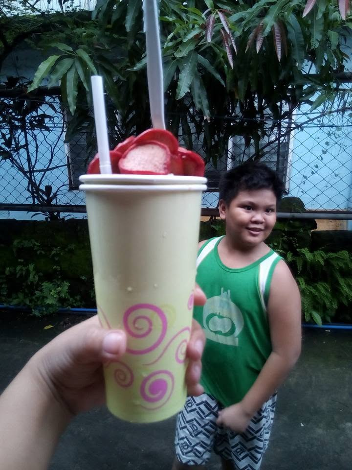

Nash Pagkalinawan
I'm Nash, a business man, and a man of people. I sell budget friendly snacks, streetfood and meals for a living.

Our Story
Greetings, Customer! You're probably wondering about the reason why I started this business. Well, it begins with my mother's own store back then which is called "Chupi's Tindahan or Chupi's Delights" a store that sells exactly the same products that my store sells right now. She sold tons of snacks, meals, and drinks. And the people loved it so much. That's how famous it was.
So I decided to open my own version of the store. As you can see her store was the original one, I just took all the inspiration from that. And now I have my own version of it. Kind of like a branch, however the store is, of course, named after me and I wanted to have the same legacy.